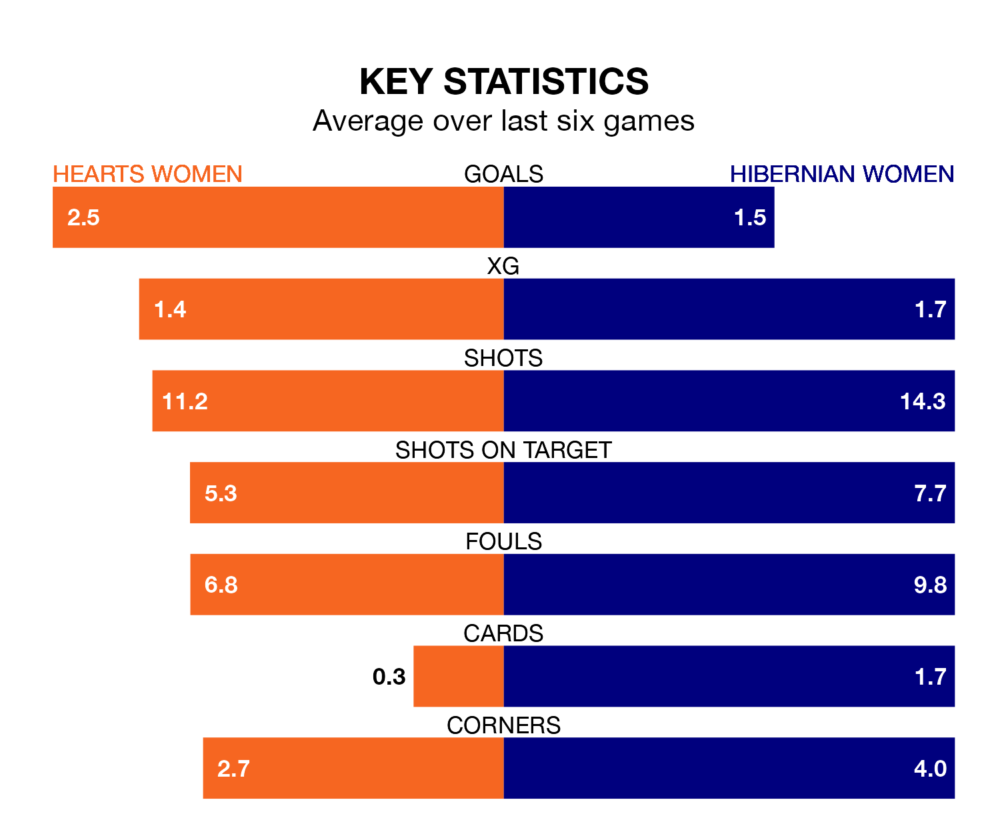

Hibernian Women face a challenge to maintain their high-scoring form away against a tight Hearts Women defence on Friday.
With 63 goals in 24 games, Hibernian are the fourth-highest scorers in SWPL 1 ahead of the 7.30pm kick-off at Oriam National Performance Centre.
They face a Hearts side who have scored 61 in 24 matches, but conceded only 24 goals, putting them fourth among the league's tightest defences – only Rangers Women, Celtic Women and Glasgow City Women have conceded fewer goals.
In Jorian Baucom, Hibernian have one of the league's sharpest shooters so far this season. She has notched 21 goals in 24 appearances, to sit second in the scoring charts.
Her goal rate of one every 86 minutes is quicker than that of Katie Jayne Lockwood, Hearts's top scorer with a goal every 105 minutes, and a total of 14 goals in 17 games.
In the last 10 years, Hearts and Hibernian have played each other on 12 occasions. Hearts won two of them, Hibernian seven, and they drew three times.
On average, Hearts scored 0.8 goals and Hibs 2.1 in those matches.
Their last meeting was on November 18, when Hibernian won 2-1 at home.
The hosts are fourth in the table after 24 games, of which they have won 14 and drawn three, earning 45 points.
Hibs are one place behind Hearts in fifth, with 13 wins and three draws putting them on 42 points.
Hearts are in reasonable form in SWPL 1, with four wins and two losses from their last six games.
With two wins and a draw over that period, the away side's form is worse – they have taken seven points from 18, compared to the home team's 12.
Hearts's last match was on March 31, a 3-0 win against Partick Thistle Women, with Kathleen Mary McGovern (two) and Dannielle Collean McGinley getting the goals for Hearts.
Hibernian lost 2-1 against Rangers Women last time out, also on March 31, with Baucom on the scoresheet.
Updated: 16:41 (UTC), 04/04/24